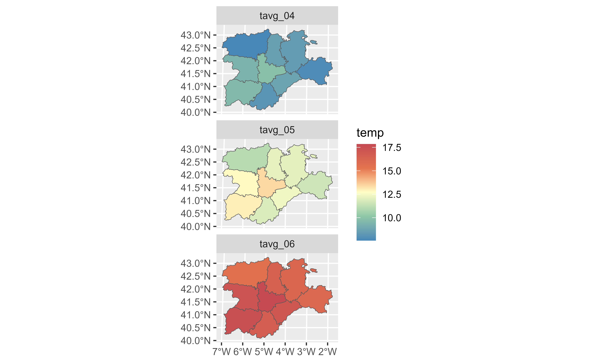

pivot_longer() "lengthens" data, increasing the number of rows and
decreasing the number of columns. The inverse transformation is
pivot_wider.SpatVector()
Learn more in tidyr::pivot_wider().
Usage
# S3 method for class 'SpatVector'
pivot_longer(
data,
cols,
...,
cols_vary = "fastest",
names_to = "name",
names_prefix = NULL,
names_sep = NULL,
names_pattern = NULL,
names_ptypes = NULL,
names_transform = NULL,
names_repair = "check_unique",
values_to = "value",
values_drop_na = FALSE,
values_ptypes = NULL,
values_transform = NULL
)Arguments
- data
A
SpatVectorto pivot.- cols
<
tidy-select> Columns to pivot into longer format.- ...
Additional arguments passed on to methods.
- cols_vary
When pivoting
colsinto longer format, how should the output rows be arranged relative to their original row number?"fastest", the default, keeps individual rows fromcolsclose together in the output. This often produces intuitively ordered output when you have at least one key column fromdatathat is not involved in the pivoting process."slowest"keeps individual columns fromcolsclose together in the output. This often produces intuitively ordered output when you utilize all of the columns fromdatain the pivoting process.
- names_to
A character vector specifying the new column or columns to create from the information stored in the column names of
dataspecified bycols.If length 0, or if
NULLis supplied, no columns will be created.If length 1, a single column will be created which will contain the column names specified by
cols.If length >1, multiple columns will be created. In this case, one of
names_sepornames_patternmust be supplied to specify how the column names should be split. There are also two additional character values you can take advantage of:NAwill discard the corresponding component of the column name.".value"indicates that the corresponding component of the column name defines the name of the output column containing the cell values, overridingvalues_toentirely.
- names_prefix
A regular expression used to remove matching text from the start of each variable name.
- names_sep, names_pattern
If
names_tocontains multiple values, these arguments control how the column name is broken up.names_septakes the same specification asseparate(), and can either be a numeric vector (specifying positions to break on), or a single string (specifying a regular expression to split on).names_patterntakes the same specification asextract(), a regular expression containing matching groups (()).If these arguments do not give you enough control, use
pivot_longer_spec()to create a spec object and process manually as needed.- names_ptypes, values_ptypes
Optionally, a list of column name-prototype pairs. Alternatively, a single empty prototype can be supplied, which will be applied to all columns. A prototype (or ptype for short) is a zero-length vector (like
integer()ornumeric()) that defines the type, class, and attributes of a vector. Use these arguments if you want to confirm that the created columns are the types that you expect. Note that if you want to change (instead of confirm) the types of specific columns, you should usenames_transformorvalues_transforminstead.- names_transform, values_transform
Optionally, a list of column name-function pairs. Alternatively, a single function can be supplied, which will be applied to all columns. Use these arguments if you need to change the types of specific columns. For example,
names_transform = list(week = as.integer)would convert a character variable calledweekto an integer.If not specified, the type of the columns generated from
names_towill be character, and the type of the variables generated fromvalues_towill be the common type of the input columns used to generate them.- names_repair
What happens if the output has invalid column names? The default,
"check_unique"is to error if the columns are duplicated. Use"minimal"to allow duplicates in the output, or"unique"to de-duplicated by adding numeric suffixes. Seevctrs::vec_as_names()for more options.- values_to
A string specifying the name of the column to create from the data stored in cell values. If
names_tois a character containing the special.valuesentinel, this value will be ignored, and the name of the value column will be derived from part of the existing column names.- values_drop_na
If
TRUE, will drop rows that contain onlyNAs in thevalues_tocolumn. This effectively converts explicit missing values to implicit missing values, and should generally be used only when missing values indatawere created by its structure.
Methods
Implementation of the generic tidyr::pivot_longer() function.
See also
Other tidyr verbs for pivoting:
pivot_wider.SpatVector()
Other tidyr methods:
drop_na.Spat,
fill.SpatVector(),
pivot_wider.SpatVector(),
replace_na.Spat
Examples
# \donttest{
library(dplyr)
library(tidyr)
#>
#> Attaching package: 'tidyr'
#> The following object is masked from 'package:terra':
#>
#> extract
library(ggplot2)
library(terra)
temp <- rast((system.file("extdata/cyl_temp.tif", package = "tidyterra")))
cyl <- vect(system.file("extdata/cyl.gpkg", package = "tidyterra")) %>%
project(temp)
# Add average temp
temps <- terra::extract(temp, cyl, fun = "mean", na.rm = TRUE, xy = TRUE)
cyl_temp <- cbind(cyl, temps) %>%
glimpse()
#> # A SpatVector 9 x 7
#> # Geometry type: Polygons
#> # Projected CRS: World_Robinson
#> # CRS projection units: meter <m>
#> # Extent (x / y) : ([ -607,946.2 / -153,819.7] , [4,285,436.1 / 4,619,242.7])
#>
#> $ iso2 <chr> "ES-AV", "ES-BU", "ES-LE", "ES-P", "ES-SA", "ES-SG", "ES-SO", …
#> $ cpro <chr> "05", "09", "24", "34", "37", "40", "42", "47", "49"
#> $ name <chr> "Avila", "Burgos", "Leon", "Palencia", "Salamanca", "Segovia",…
#> $ ID <int> 1, 2, 3, 4, 5, 6, 7, 8, 9
#> $ tavg_04 <dbl> 8.098067, 8.405818, 7.566549, 8.558559, 9.593332, 8.727293, 7.…
#> $ tavg_05 <dbl> 11.84584, 12.07354, 11.09056, 12.11431, 13.00844, 12.35747, 11…
#> $ tavg_06 <dbl> 16.64684, 16.14488, 15.51468, 16.45461, 17.55421, 17.05671, 16…
# And pivot long for plot
cyl_temp %>%
pivot_longer(
cols = tavg_04:tavg_06,
names_to = "label",
values_to = "temp"
) %>%
ggplot() +
geom_spatvector(aes(fill = temp)) +
facet_wrap(~label, ncol = 1) +
scale_fill_whitebox_c(palette = "muted")

# }